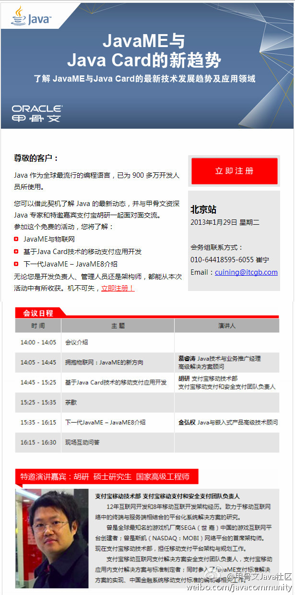

//@CSDN付江:Alexa排名在所有中文网站里第40位左右 作为专注于技术人群的垂直媒体 实属不易 加上拥有全球最大的开发者数据库...一点不意外[呵呵]//@CSDN林象海: //@阿Q蓝小心: 哈哈 为老东家转一个@媒体价值网数据发布:#开元网络与品牌研究#根据2012年12月开元网络与品牌研究最新研究结果，在IT技术行业网站综合影响力评估中，CSDN的综合影响力最强，排名第一，其次是博客园和51CTO分别位居第二、三名。详细排名如下表所示：网页链接
百会维基产品很不错，可以上传附件，权限管理好。而且，作为百会提供的云服务，可以省去内部搭建和维护Wiki的时间和精力, 从稳定性上来说，也更好些。@CSDN双鱼-HR 看看这个价格如何，OA系统能否支持？ 网页链接
使用外部云计算服务的优势包括：1. 成本是可预估的，而内部开发部署有很多隐性成本；2. 公司内外都可访问；3。移动端支持好；4。适于于非关键业务；5。更侧重协作。@Ada李力:百会维基产品很不错，可以上传附件，权限管理好。而且，作为百会提供的云服务，可以省去内部搭建和维护Wiki的时间和精力, 从稳定性上来说，也更好些。@CSDN双鱼-HR 看看这个价格如何，OA系统能否支持？ 网页链接
超人很多啊，前一段时间读过这个：【女博士，女超人】哥们的老婆是个博士，咱认识一大堆女博士，但没有一个女人能达到此博士的水平，用超人形容她一点不为过……【全文】网页链接---:抱歉，此微博已被作者删除。查看帮助： 网页链接
前排有两个小姑娘在拍照。空姐微笑提醒：“飞机可以随便照，但乘务员不能随便照”。这种说法有什么依据吗？哪些人是不可以被随便拍照的？我以为，通用做法是给人拍照前要取得对方同意，但如果规定别人不能拍自己以及同类人，这说法就很古怪。
Java Card还有机会。//@程序媛:Java又有技术沙龙活动啦，如今如火如荼的移动互联网时代，您对JavaME & Java Card了解多少呢？重量级演讲人将会给您带来分享@甲骨文Java社区:“JavaME与Java Card的新趋势及应用”，这个活动推荐给大家。 地址：网页链接 注册地址：网页链接 
从徐州到沭阳，见识了各种手机导航软件。图吧总往省道上引路；高德地图信息滞后，指引的路不通；百度地图还算靠谱；苹果地图用的是高德；谷歌地图对这种中过三四级城市的信息向来不够详细；还有个三星导航，貌似还能派上用场。宿迁市大兴土木，封路树墙，在那里导航软件都得认栽。

 网页链接
网页链接